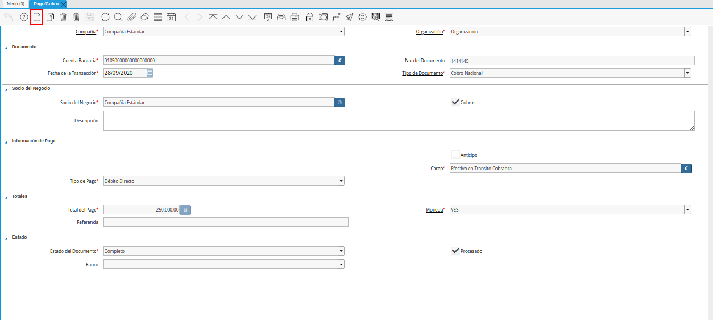
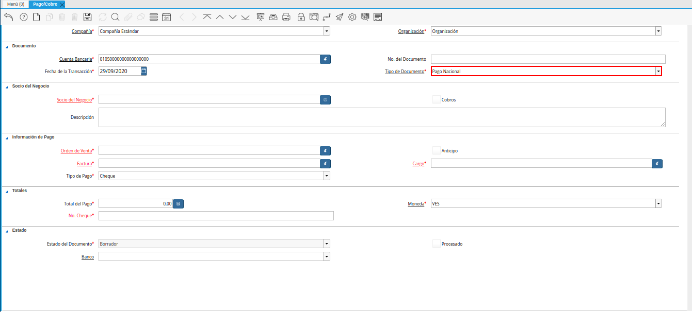
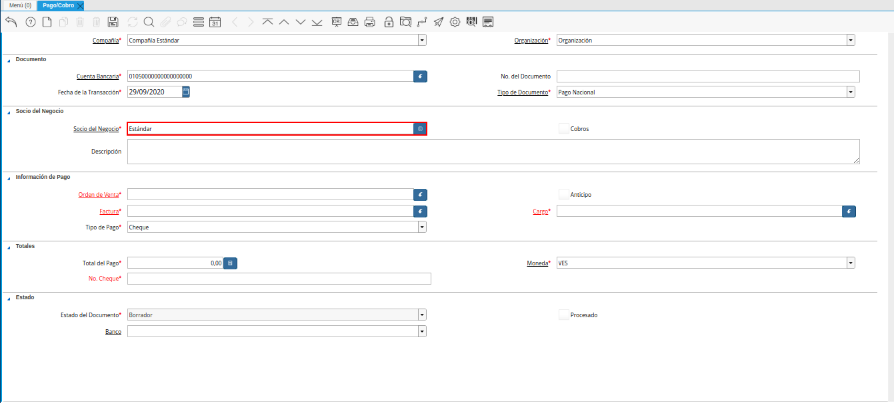
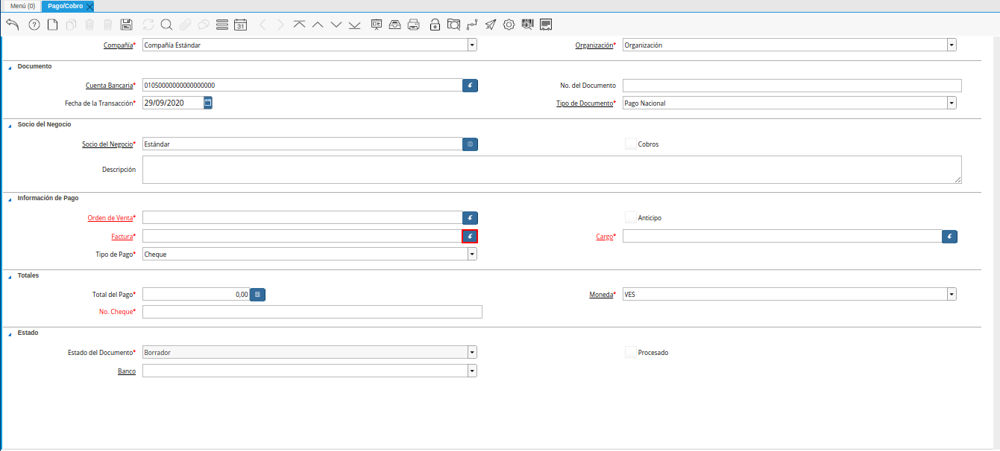
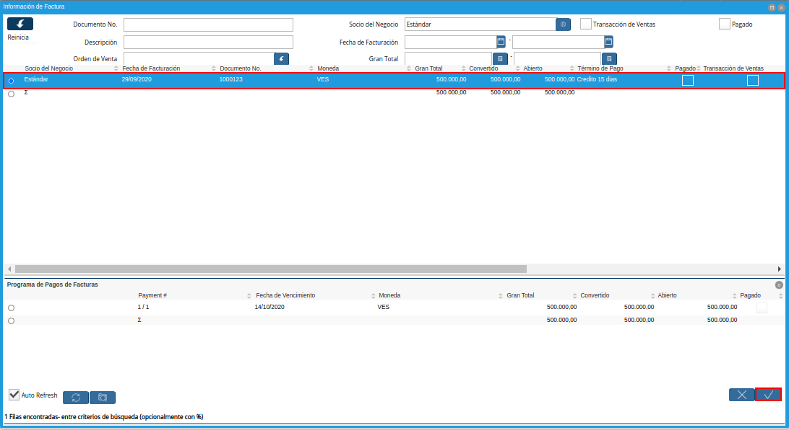
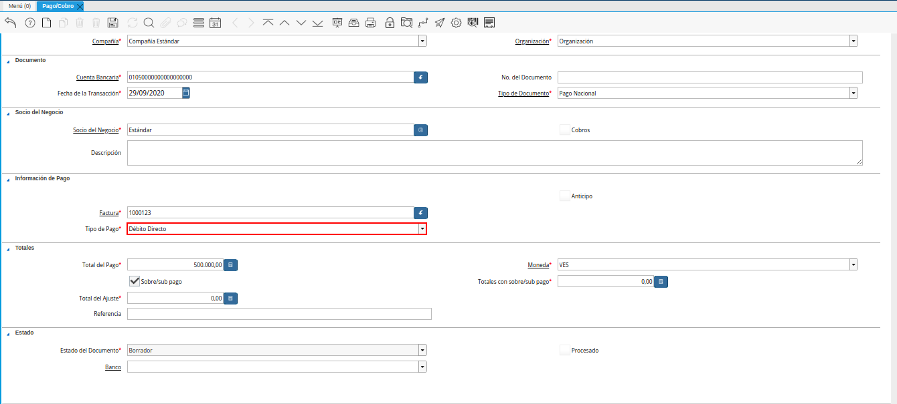
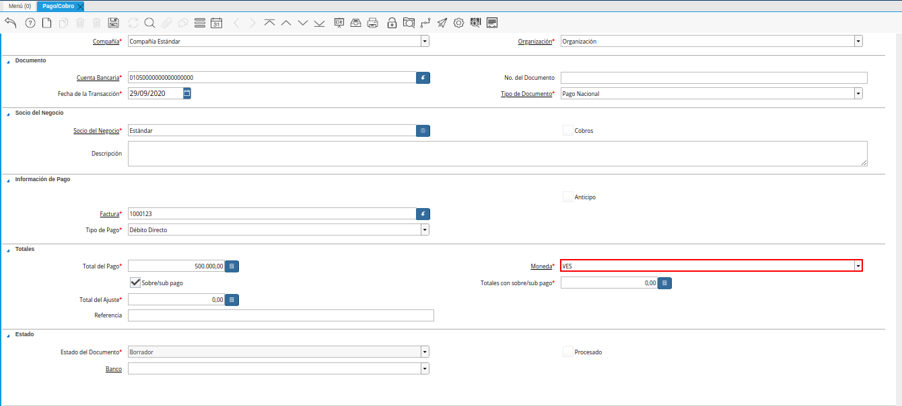
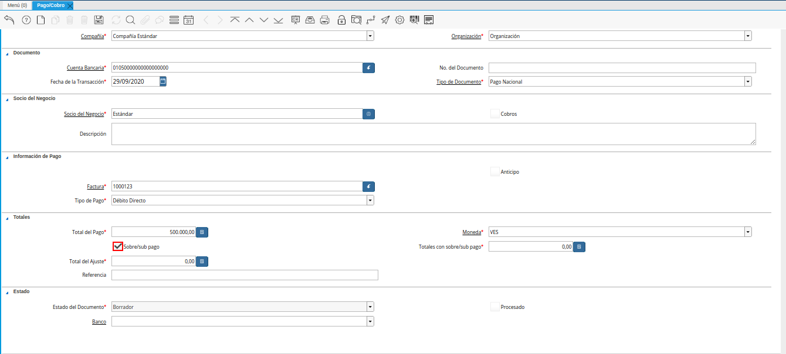
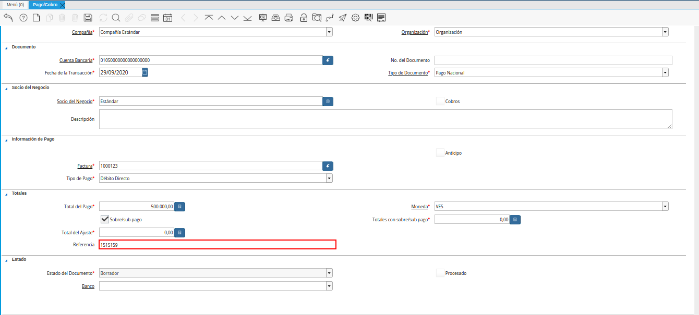

6.3.1. Registro de Pago¶
Para ejemplificar el procedimiento de generar un pago en ADempiere, es utilizada la factura por pagar “1000123”.
Imagen 1. Factura por Pagar

Ubique y seleccione en el menú de ADempiere, la carpeta “Gestión de Saldos Pendientes”, luego seleccione la ventana “Pago/Cobro”.

Imagen 2. Menú de ADempiere
Luego podrá visualizar la ventana “Pago/Cobro”, donde debe seleccionar el icono “Registro Nuevo” que se encuentra ubicado en la barra de herramientas de ADempiere para crear un nuevo registro en la ventana “Pago/Cobro”.

Imagen 3. Icono Registro Nuevo
Seleccione en el campo “Organización”, la organización para la cual esta realizando el documento “Pago”.

Imagen 4. Campo Organización
Seleccione en el campo “Cuenta Bancaria”, la cuenta bancaria a la cual será realizado el pago.

Imagen 5. Campo Cuenta Bancaria
Introduzca en el campo “No. del Documento”, el número de documento correspondiente a la secuencia del tipo de documento que se encuentre realizando.

Imagen 6. Campo No. del Documento
Seleccione en el campo “Fecha de la Transacción”, la fecha en la que se encuentra realizando la transacción del pago.

Imagen 7. Campo Fecha de la Transacción
Seleccione el tipo de documento a generar en el campo “Tipo de Documento”, la selección de este define el comportamiento del documento que se esta elaborando, dicho comportamiento se encuentra explicado en el documento “Tipo de Documento” elaborado por ERPyA.

Imagen 8. Campo Tipo de Documento
Seleccione en el campo “Socio del Negocio”, el socio del negocio proveedor al cual le será realizado el pago.

Imagen 9. Campo Socio del Negocio
Introduzca en el campo “Descripción”, una breve descripción referente al pago que será realizado.

Imagen 10. Campo Descripción
Seleccione la factura a pagar en el campo “Factura”, la misma puede ser seleccionada con ayuda del identificador de dicho campo.

Imagen 11. Identificador del Campo Factura
Podrá visualizar la siguiente ventana de información de factura, donde debe seleccionar la factura a pagar y la opción “OK” para cargar los datos a la ventana “Pago/Cobro”.

Imagen 12. Selección de Factura y Opción OK
Seleccione en el campo “Tipo de Pago”, la forma de pago utilizada para cancelar la factura seleccionada.

Imagen 13. Campo Tipo de Pago
Podrá visualizar en el campo “Total del Pago” el monto total de la factura, mismo monto total que se va a cancelar con el documento “Pago” que se esta realizando.

Imagen 14. Campo Total del Pago
Seleccione en el campo “Moneda”, la moneda correspondiente al pago que se esta realizando.

Imagen 15. Campo Moneda
El checklist “Sobre/sub Pagos”, indica sobre pago (no contabilizado) o sub pago (pago parcial).

Imagen 16. Checklist Sobre Sub Pagos
El campo “Totales con Sobre Sub Pago”, indica sobre pago (no contabilizado) o sub pago (pago parcial).

Imagen 17. Campo Totales con Sobre/Sub Pagos
El campo “Total del Ajuste”, indica el total a ser ajustado como incobrable.

Imagen 18. Campo Total del Ajuste
Introduzca en el campo “Referencia” la referencia correspondiente a la transacción generada por la forma de pago utilizada.

Imagen 19. Campo Referencia
El campo “Estado del Documento”, indica el estado del documento en este momento, para cambiar el estado del documento utilice la opción “Procesar Pago”, desplegada por el icono “Proceso”, ubicado en la barra de herramientas de ADempiere.

Imagen 20. Campo Estado del Documento
Seleccione en el campo “Banco”, el banco para esta organización o para un socio del negocio con quien esta organización efectúa transacciones.

Imagen 21. Campo Banco
El checklist “Procesado”, indica que un documento ha sido procesado.

Imagen 22. Checklist Procesado
Note
Recuerde guardar el registro de los campos seleccionando el icono “Guardar Cambios”, ubicado en el barra de herramientas de ADempiere.
Seleccione la opción “Procesar Pago”, desplegada por el icono “Proceso”, ubicado en la barra de herramientas de ADempiere.

Imagen 23. Opción Procesar Pago del Icono Proceso
Seleccione la accion “Completar” y la opción “OK”, para completar el documento “Cobro” que esta realizando.

Imagen 24. Acción Completar Documento